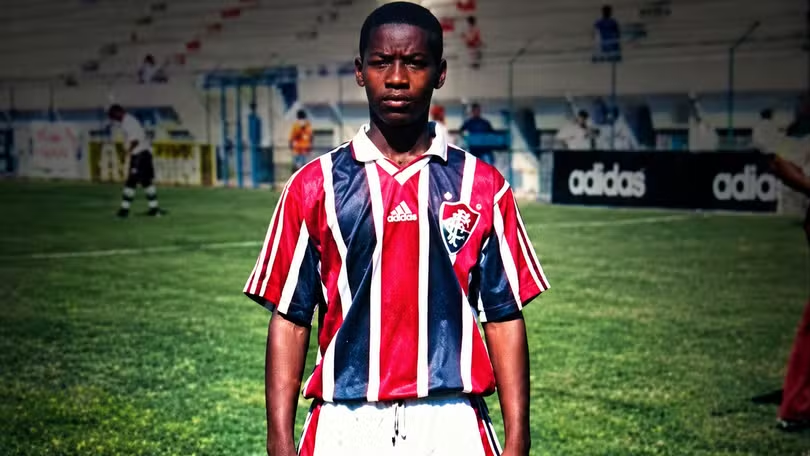
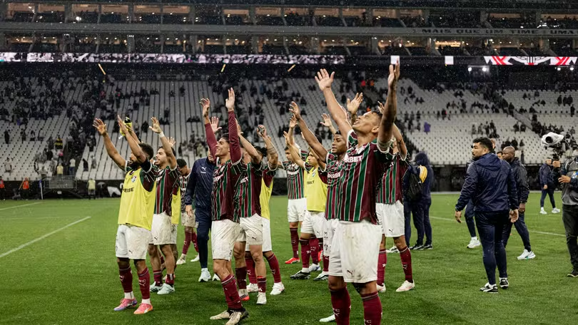

Artilheiro da Chapecoense na temporada, Marcinho fala sobre futuro no clubeAtacante está há mais de três anos no Verdão e lembrou momentos marcantes |
|
 |
"Era mágico": quem foi o lateral que ofuscou Marcelo na base, perdeu-se nas drogas e morreu aos 39 anosTratado como futuro craque na base do Fluminense, Ulisses se viciou em cocaína, teve passagem-relâmpago pelo Vasco e morreu dois anos após fugir de clínica de reabilitação |
 |
Fluminense vê importância estratégica em duelo contra o Coritiba às vésperas da semifinal da LibertadoresDuelo pelo Brasileirão acontece nesta quinta-feira, no Maracanã, com transmissão da TV Globo |